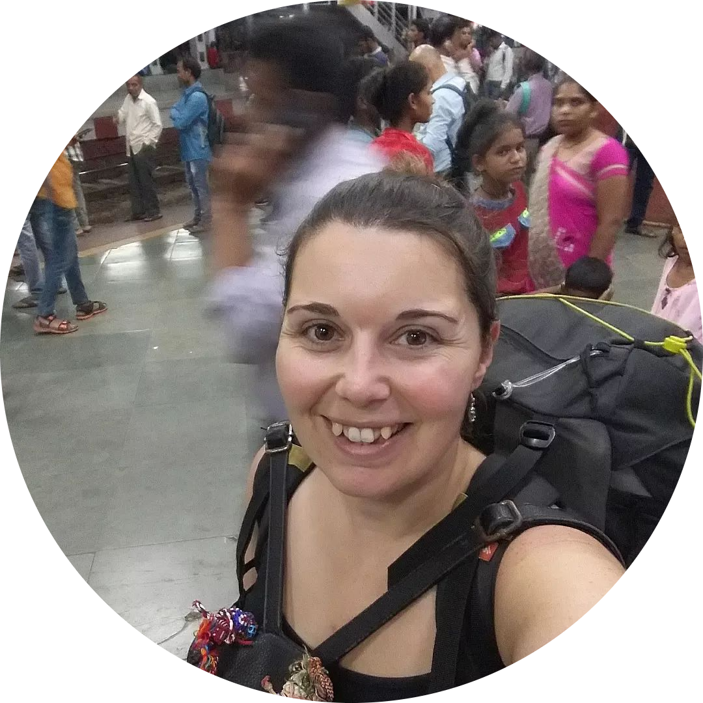

Quem me conhece sabe que a minha grande paixão são as viagens, já realizei bastantes de forma independente, e entretanto decidi partilhar esta minha paixão com todos vocês, ajudando a organizar as vossas viagens de sonho ou apenas uma simples escapadinha. ✈️🌏
Nasci em Évora e sempre vivi numa aldeia muito pequenina, mudando-me para Lisboa por motivos profissionais por diversas ocasiões. Sempre fui muito incerta em relação ao meu futuro profissional, o que me levou a ter diversos trabalhos, a realizar diferentes formações, adquirindo diferentes skills, o que na realidade até é algo que me agrada por me sentir mais preparada para o Mundo. Contudo, devo confessar, existia sempre aquela vontade de estabilidade, bastante imposta pela nossa sociedade, não é verdade?
Pois bem, a única coisa que percebi que nunca muda é a minha paixão por viagens! O bichinho das viagens começou em 2014, quando realizei a minha primeira viagem sozinha, embora contratada através de agência, até à Turquia, a partir daí comecei a marcar as minhas viagens de forma independente, organizando tudo sozinha, até ao mais pequeno pormenor. Já realizei 2 viagens mais longas, a primeira foi em 2017 pela Ásia que durou 2 meses, e a segunda foi em 2022, ainda durante a pandemia, na qual fiz uma pequena volta ao Mundo, passando por 3 Continentes, durante 4 meses e 10 dias. Entretanto muito mais aventuras estão por vir, especialmente por estar a partilhar a 100% esta minha paixão pelas viagens e pelo Mundo com todos vocês! 💖✈️🌎
Se como eu tens uma grande paixão por viagens, gostas de pesquisar e organizar as tuas próprias viagens e até as dos teus amigos, fica a saber que podes ganhar dinheiro com isso, ao mesmo tempo que alcanças a tão desejada liberdade geográfica.
Entra em contacto comigo para saberes como podes começar, já hoje, a rentabilizar a tua paixão por viagens!
Pede-me um orçamento ou pergunta-me como podes rentabilizar as tuas viagens, através do contacto 961047713 ou enviando-me um email através da opção ⬇️
CONTACTA-ME